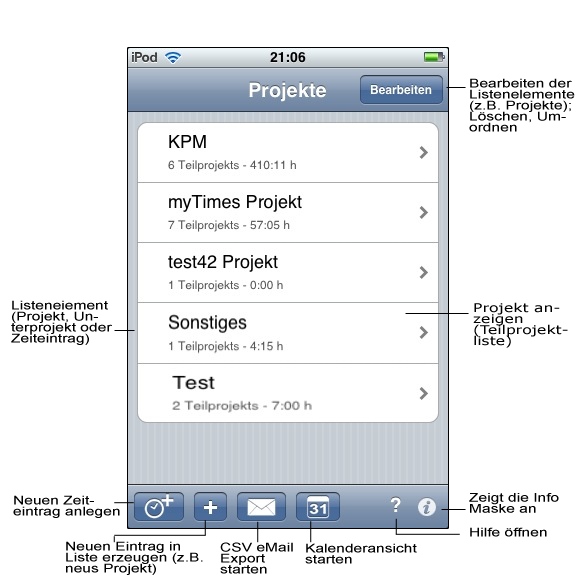

myTimes Hilfe
Im Folgenden wird kurz beschrieben wie sich Projekte anlegen lassen. Wie dafür Unterprojekte angelegt werden und wie Zeiten erfasst und geändert werden können.
In myTimes wird eine klarer Strukturierung der Daten ermöglicht. Zeiten werden für Teilprojekte von Projekten erfasst.

Dieser Screenshot zeigt die grundlegenden Bedienelemente von myTimes.
Neuen Zeiteintrag erfassen
Ein neuer Zeiteintrag kann durch Tippen auf den linken Knopf der Toolbar erfasst werden. Dabei müssen das zu verwendende Projekt und Unterprojekt bereits existieren. In der folgenden Maske wird neben der Auswahl des Projekts und Unterprojekts die Anfangs- und Endzeit festgelegt. Weiterhin kann eine Pause und eine Beschreibung für den Zeiteintrag angegeben werden.
Neues Projekt anlegen
Ein neues Projekt wird auf der "Projekte" Seite durch Tippen des Plus-Knopfes initiiert. Es erscheint nun eine Seite zum Eingeben des Projektnames. Durch Tippen auf "Speichern" wird das Projekt angelegt.
Durch Tippen auf eine Projekt-Zeile wechselt man zu Teilprojekt-Seite für das gewählte Projekt.
Neues Teilprojekt anlegen
Auf der Teilprojekt-Seite (Im Titel erscheint der Name des ¸bergeordneten Projekts) lassen sich nun, analog zum Anlegen von Projekten, Teilprojekt durch Tippen auf den Plus-Knopf erzeugen.Durch Tippen auf eine Teilprojekt-Zeile gelangt man zur Zeiten-Seite.
Namen von Projekt und Teilprojekt editieren
Die Namen eines Projekts oder Teilprojekts können nachträglich geändert werden. Dazu wird durch Tippen rechts oben auf den Bearbeiten-Knopf in den Bearbeiten-Modus der Projekt- oder Teilprojektliste gewechselt. Hier nun die entsprechende Zeile antippen. Es erschein der Editor für den Namen. Durch Speichern werden die Änderungen übernommen.Starten und Stoppen der automatischen Zeiterfassung

myTimes ermöglicht das automatischer Erfassen von Zeiten. Zeiten lassen sich Starten und Stoppen. Das Starten der Zeiterfassung kann entweder auf einem Unterprojekt oder einem bestehenden Zeiteintrag erfolgen. Wird die Zeiterfassung auf einenm Unterprojekt gestartet, das noch keinen aktiven Eintrag beinhaltet, so wird ein neuer Zeiteintrag erzeugt und gestartet. Die Startzeit dieses Eintrags wird auf die aktuelle Zeit gesetzt. Beim Drücken des Stop-Knopfes auf einem Unterprojekt, das einen aktiven Zeiteintrag beinhaltet, wird der aktive Zeiteintrag gestoppt. Der Endzeitpunkt diese Eintrags wird auf die aktuelle Zeit gesetzt.
Au0erdem ist es möglich einen gestoppten Zeiteintrag selbst wieder fortzusetzen bzw. zu anzuhalten. Die Start- und Stoppzeit wird dann jeweils auf die aktuelle Zeit gesetzt.
Zeiten erfassen
Auf der Zeiten-Seite werden Zeiten für ein Teilprojekt erfasst. Durch Tippen auf den Plus-Knopf wird die Zeiterfassungsmaske angezeigt. Hier lassen sich Anfangszeitpunkt, Endzeitpunkt, Pause und eine Beschreibung für den Eintrag eingeben. Die Dauer eines Zeiteintrags ergibt sich aus der Differenz zwischen Start- und Endzeitpunkt abzüglich der Pausezeit.Kalenderansicht (Tag)
Für eine Übersicht der Zeiteinträge eines Tagen kann die Kalenderansicht verwendet werden. Hier werden alle Zeiten eines Tages grafisch dargestellt (ähnlich dem iPhone Kalender). Durch Tippen auf einen Eintrag wird dieser geöffnent und kann bearbeitet oder gelöscht werden.

Dieser Screenshot zeigt die Zeiterfassungsmaske.